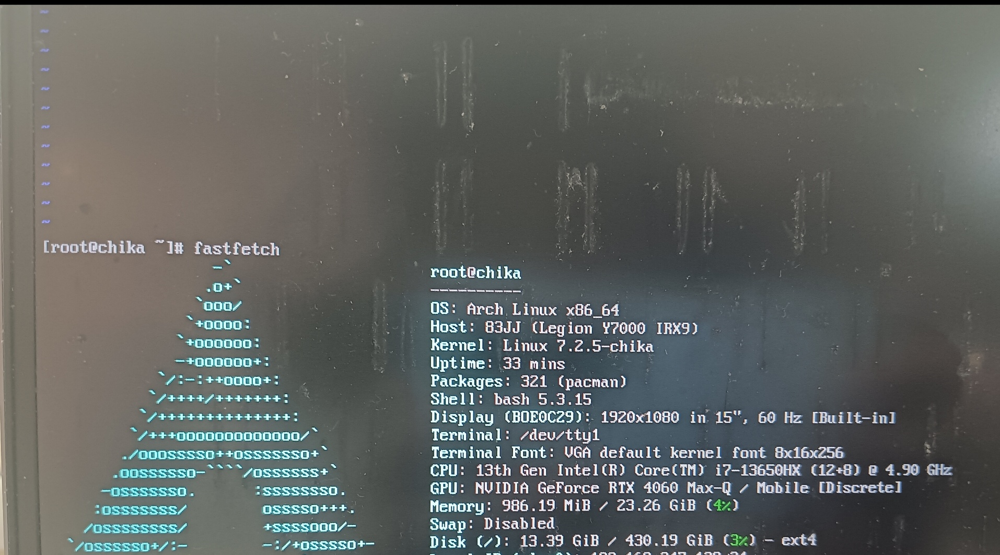

Whenever I sit before neovim and the terminal, a quiet illusion
settles in—that I can create an entire world. The cursor blinks in VS
Code, and bash waits for a command. In that instant, the world is
compressed into pure input and output. You type npm init, and the
project gains a skeleton. Write a function, and you have rules. git
push, and your ideas are launched onto someone else’s screen. In this
moment, the world no longer demands that I perform smoothness, no longer
forces me to guess in silence, to maneuver through pleasantries. When
the keys fall, thought is translated directly into reality; will needs
no detour, desire needs no compromise. There are no spectators, no
judge’s bench—only the screen glowing dispassionately, like an honest
mirror reflecting exactly what I want to build. Sometimes I feel that
code is not a tool but a clearer language. It is no good at consoling,
no good at concealing; it can even be harsh—miss a single symbol and it
refuses you without mercy. And yet, precisely because of this, it is
fascinating. It requires no guessing, no ingratiation; as long as the
conditions are met, the result appears. In this world, such plainspoken
things are rare. So I sit before the screen, the scrolling logs like
flowing water beside a pond, washing away the noise outside. Now the
world seems to stand still, and you finally understand: this solitude is
not absence, but freedom.
That calm, eternally blinking cursor is like a spark at the bottom of
a deep well. It is not an invitation, not a prod, but more like a
patience—a patience more thorough than any human being’s. The sounds of
the outside world are cut off by a firewall, not a physical one, but a
barrier that naturally arises the moment you fix your gaze on the
scrolling logs. The rumble of the subway, the buzz of the phone, the
expectations of others—all lose their power to penetrate before the
flowing text of stdout.
You type ls, and it honestly lists the present state, no
embellishment, no hidden corners. You say cd .., take a step back, and
the world really steps back. Such causality is so rare, rare to the
point of luxury. No one hides emotion in words, no gaze needs
deciphering, no silence needs to be guessed. Between you and the machine
there is only a contract so concise as to be almost cruel: if correct,
it runs; if wrong, it throws an error.
And so chaos begins to be ordered, vagueness begins to be named, and
wishes begin to turn into something executable. The outside world is
still clamoring, but before this glowing screen, the clamor temporarily
loses its power. What you hear is only the faint echo of a command
landing. It is not victory, nor escape—just a rare quiet.
Happy birthday to me!
I accidentally discovered that I had written a static website
generator.
happy coding daliy life.
Everyday, I always read papers and write code. Although I enjoy them,
I have some hobbies such as tinkering with my linux desktop(Uh…it still
ugly), adding new features in my blog, taking a photograph and so on.
There are so many novels I want to read. But I always fall asleep after
reading less than two pages. Oh well…things will be better if you don’t
think more.
so abstract. btw. :-(
so real.
code is my blood, math is my soul, and logic is my breath.
suki suki suki suki suki suki
suki suki suki
Severely dependent on caffeine
Always check the path before and verify the presence of other
mount of points before executing any rm -rf *.
Recently, I gave gentoo linux a try; the installation process was
actually quite arduous–I spend almost a whole day to configuring it. I
am performing the installation on an archlinux host. The inital
preparations are simple.
sudo mkdir -p /mnt/yukisudo mount /dev/nvme0n1p7 /mnt/yukisudo mkdir -p /mnt/yuki/procsudo mount --types proc /proc /mnt/yuki/procsudo mkdir -p /mnt/yuki/devsudo mount --rbind /dev /mnt/yuki/dev &&sudo mount --make-rslave /mnt/yuki/devsudo mkdir -p /mnt/yuki/sys sudo mount --rbind /sys /mnt/yuki/sys &&sudo mount --make-rslave /mnt/yuki/syssudo mkdir -p /mnt/yuki/run sudo mount --bind /run /mnt/yuki/run &&sudo mount --make-slave /mnt/yuki/runsudo cp /etc/resolv.conf /mnt/yuki/etc/
The preliminary preparations are now compleRte. eady to
chroot the new system.
sudo chroot /mnt/yuki /bin/bash
The chroot environment inherits the host’s network settings;
make sure config is correct. Given the dependencies, who knows that
what happens after make olddefconfig ?
for s in EFI_STUB DRM_SIMPLEDRM SYSFB_SIMPLEFB BLK_DEV_NVME EXT4_FS \ BTRFS_FS DRM_NOUVEAU MODULE_SIG SYSTEM_TRUSTED_KEYS;doprintf'%-24s %s\n'"$s""$(./scripts/config--state$s)"done
write /etc/kernel/cmdline
root=UUID=<uuid> rw
make"-j$(nproc)"
Everything is proceeding so smoothly. I installed sucessfully.
However, the number of gentoo mirror sites is pitifully small. I didn’t
notice the community announcement my IP got banned because I
synchronized too many times. After a few twists and truns, I back
archlinux. arch is best, pacman is best, AUR is best. (KomariChika
is best) This time, I customized my kernel—a process that took
nearly 19 hours, primarily spent on kernel tuning. I chose niri as my
desktop environment; I feel it suits me better, as it has a superior
approach to tiling.

I
probably won’t be sprucing up my desktop for a while; the renderer
project has already dragged on for a week, and since I have a lot of
things I want to do lately, I really need to catch up on progress.
komarichika
i use arch, btw.
A brief record of motherboard error upon startup. After powering on
and reaching the tty interface, the motherboard suddenly reported an
error.
ACPI BIOS Error (bug): Could not resolve symbol[\_SB.PC00.LPCB.EC0._Q37.PNOT], AE_NOT_FOUNDACPI Error: Aborting method \_SB.PC00.LPCB.EC0._Q37due to previous error (AE_NOT_FOUND)
so, I rebooted and checked the kernel logs.
[chika@chika ~]$ sudo dmesg -w|grep-i pnot[sudo] password for chika: [ 571.238245] ACPI BIOS Error(bug): Could not resolve symbol [\_SB.PC00.LPCB.EC0._Q38.PNOT], AE_NOT_FOUND (20260408/psargs-365)[ 572.284350] ACPI BIOS Error(bug): Could not resolve symbol [\_SB.PC00.LPCB.EC0._Q37.PNOT], AE_NOT_FOUND (20260408/psargs-365)
This is a fucking motherboard bug. The good thing, though, is that it
donesn’t affect normal use–it’s just a bit annoying that the kernel
scrolls across the screen when boot up (